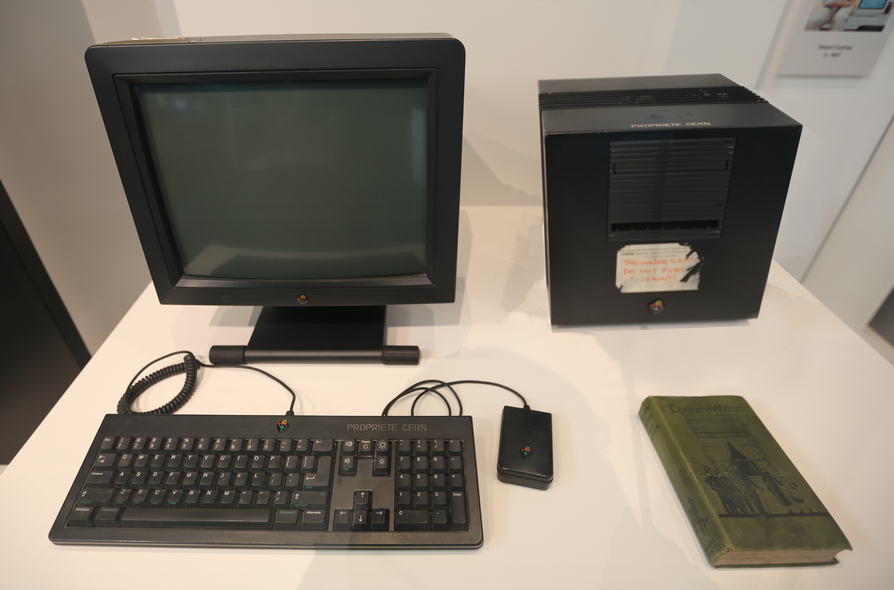

From a Simple Idea to a Worldwide Revolution
Imagine a world without websites, search engines, or clickable links connecting information across the globe.
Hard to picture, right?
But the World Wide Web hasn't always existed. What started as an idea to help scientists share information eventually transformed how billions of people communicate, learn, and access knowledge.
Let's travel back to where it all began.
The Birth of the World Wide Web
Did you know the World Wide Web was invented at a physics research laboratory?
In 1989, British scientist Tim Berners-Lee, working at CERN in Switzerland, proposed a system that would make it easier for researchers to share and access information across different computers.
His idea involved connecting documents through hyperlinks, allowing people to move between related information.
That idea eventually became the World Wide Web.
Interestingly, the web wasn't originally invented for social media, entertainment, or online shopping. It was created to solve a problem with sharing information.
The World's First Website 💻
Today, websites can contain videos, animations, interactive features, and beautiful designs.
But the world's first website was much simpler.
Created at CERN in 1990, it explained what the World Wide Web was, how it worked, and how other people could create their own webpages.
The website was hosted on Tim Berners-Lee's NeXT computer, which also served as the first web server.
Fun fact: You can still explore a restored version of the first website.

The Decision That Helped the Web Grow 🌍
Here's one of the most important moments in web history.
On April 30, 1993, CERN released the World Wide Web software into the public domain.
This meant people could use and develop the technology without paying CERN licensing fees.
Making the technology freely available encouraged more people and organisations to create websites, browsers, and other web technologies.
Imagine how different the web might have become if using its foundational technology had required expensive licences.
A Quick Timeline of Web History
| Year | Milestone | Why It Matters |
|---|---|---|
| 1989 | Tim Berners-Lee proposed the Web | Introduced the idea of connected information |
| 1990 | First web browser and server developed | Turned the idea into a working system |
| 1991 | Web software announced on the internet | Helped introduce the project to a wider audience |
| 1993 | CERN made the Web software freely available | Encouraged wider adoption and development |
| 1994 | World Wide Web Consortium (W3C) established | Supported the development of shared web standards |
Want to Explore Web History Further?
The web has come a long way, but its story is far from over.
Discover more about the people, inventions, and decisions that shaped the internet experience we know today.
Further Reading: